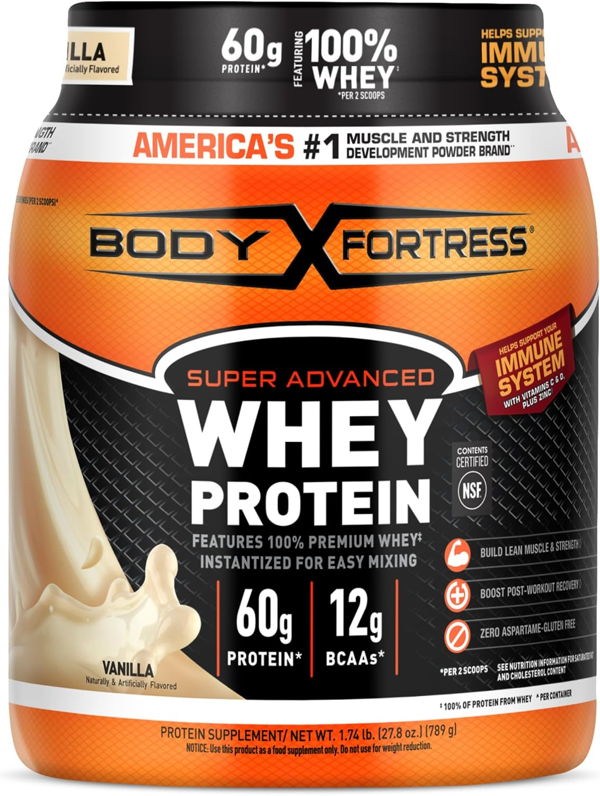

Body Fortress: the cheapest protein powder on the market with real independent heavy metal verification.
Best Cheap Protein Powder With Low Heavy Metals (2026)
✅ Direct Answer: The Cheapest Verified-Safe Pick
Body Fortress Super Advanced Whey, at roughly $0.67 per serving, is the cheapest protein powder with real independent heavy metal verification: Clean Label Project certified, non-detectable lead, cadmium, arsenic and mercury. Optimum Nutrition Gold Standard (~$0.75/serving, Consumer Reports #5 of 23, 56% of CR's level of concern) is the close second. Two brands with "budget" reputations — Nutricost and Six Star — turn out to be worse bets on both price and verification. Details below.
How We Compared These Brands
Independent Data Sources: Consumer Reports, Clean Label Project, and NSF/Informed Sport certification records — cross-checked against each brand's own dedicated analysis on this site.
✓ 100% Independent: Clean Protein List accepts no brand sponsorships or payments for rankings.
Analysis verified by US Military Veteran & Supplement Safety Researcher, Ray Rothwell.
📋 Table of Contents
Cheap & Verified: The Comparison
Only two protein powders under $1/serving currently have real independent heavy metal verification behind them. Here's how they stack up:
| Brand | Price/Serving | Lead Result | Verification |
|---|---|---|---|
| Body Fortress | ~$0.67 💰 | Non-detect | Clean Label Project ("Clean Sixteen") |
| ON Gold Standard | ~$0.75 | 56% of CR's level of concern (~0.28 µg, derived) | Consumer Reports #5 of 23 + Clean Label Project |
Both numbers come from each brand's own dedicated analysis: Body Fortress lead testing results and ON Gold Standard lead testing results.
Disclosure: This page contains affiliate links. If you buy through them, we may earn a commission at no extra cost to you.
💡 The Practical Takeaway
ON Gold Standard isn't "below detection" the way Body Fortress is — it's cleared for daily use at roughly 1.75 servings/day based on CR's benchmark, not unlimited use. If you're a single-shake-a-day user, that distinction won't matter. If you're doing multiple scoops daily, Body Fortress's non-detect result gives you more room.
If You'll Pay a Little More
Stepping up to roughly $1.00-$1.30/serving gets you two more independently verified options, each with a different kind of proof:
| Brand | Price/Serving | What Was Verified |
|---|---|---|
| NOW Sports Whey Isolate | ~$1.00-$1.30 | Labdoor testing: lead, arsenic, cadmium and mercury all undetected. Informed Sport certified every batch. |
| Dymatize Super Mass Gainer | ~$1.25 | Consumer Reports #2 of 23, 25% of CR's level of concern, NSF Certified for Sport. |
Dymatize's product is a mass gainer, not a straight whey — more calories and carbs per serving, so it's a different use case, not a drop-in substitute. Full detail: NOW Sports lead testing analysis.
Budget Brands to Be Careful With
Two brands trade on a "budget" reputation that doesn't hold up when you check the actual numbers.
Nutricost — Not Actually Cheap, Not Independently Tested
Nutricost whey typically runs $1.12-$1.68 per serving — more than both Body Fortress and ON Gold Standard — and it hasn't been tested by Consumer Reports, Clean Label Project, or NSF. The brand does use ISO-accredited in-house labs, but that's a manufacturing quality process, not a published independent heavy metal result. See our full Nutricost analysis for what "third-party tested" does and doesn't mean here.
Six Star — Zero Testing, Despite the Parent Brand's Reputation
Six Star Pro Nutrition is MuscleTech's Walmart budget line. MuscleTech's own premium 100% Mass Gainer ranked #1 safest in Consumer Reports' testing (lead not detected) — but Six Star is a separate product line that has never been independently tested for heavy metals. Same parent company doesn't mean same formulation or verification. Full breakdown: Six Star safety analysis.
Why Price Doesn't Predict Safety
Heavy metal contamination has no consistent relationship with price. The clearest evidence is at both ends of the market:
- Body Fortress ($0.67/serving) — non-detectable lead
- Naked Nutrition ($2.50/serving) — 7.7 µg lead, ranked #23 of 23 (worst)
- Huel Black ($3.00/serving) — 6.3 µg lead, ranked #22 of 23
What actually predicts contamination risk is the protein source and how carefully a specific batch was tested — not the tub's price tag or marketing polish. That's why this guide ranks brands by verification status first, price second.
See the complete lead-free protein brand database for the full picture across 134+ brands.
Which Pick Fits You?
Frequently Asked Questions
Is cheap protein powder safe?
It depends entirely on the brand, not the price. Body Fortress ($0.67/serving) is Clean Label Project certified with non-detectable lead — cheaper AND cleaner than many premium brands. But other budget brands like Six Star have never been independently tested at all. Price tells you nothing about safety on its own; testing status does.
What is the cheapest verified-safe protein powder?
Body Fortress Super Advanced Whey, at roughly $0.67 per serving, is the cheapest protein powder with independent heavy metal verification (Clean Label Project "Clean Sixteen" certification, non-detectable lead, cadmium, arsenic and mercury).
Is Nutricost a good budget protein powder?
Its reputation as a budget brand doesn't hold up on price or verification. It typically runs $1.12-$1.68 per serving — more expensive than Body Fortress or ON Gold Standard — and it has not been tested by Consumer Reports, Clean Label Project, or NSF. See our full Nutricost analysis for details.
Is Six Star protein powder safe?
Unknown. Six Star Pro Nutrition, MuscleTech's Walmart budget line, has zero independent heavy metal testing. MuscleTech's own premium 100% Mass Gainer ranked #1 safest in Consumer Reports' testing, but that result does not carry over to Six Star, a separate product line from the same parent company.
Does spending more on protein powder mean it's safer?
No. Heavy metal contamination has no consistent link to price. Naked Nutrition ($2.50/serving) and Huel Black ($3.00/serving) rank among the most contaminated products Consumer Reports tested, while Body Fortress ($0.67/serving) tested non-detectable. What matters is whether a specific product has real independent testing behind it.
🔎 Want a Personalized Recommendation?
Take our 60-second quiz to see which verified-safe protein fits your budget and goals.
Compare Safe Protein Options →Sources:
- Consumer Reports, "Protein Powders and Shakes Contain High Levels of Lead," October 2025, updated January 2026 (23 products). "Readers Asked Us to Test These 5 Protein Powders," January 2026 (5 products).
- Clean Label Project, "Protein Powder Study 2.0." Body Fortress and Optimum Nutrition Gold Standard both certified on the "Clean Sixteen" list.
- Labdoor, independent Certificate of Analysis testing of NOW Sports Whey Protein Isolate (lot 336100).
- Pricing figures reflect typical retail pricing at time of publication and may vary by retailer and promotion.